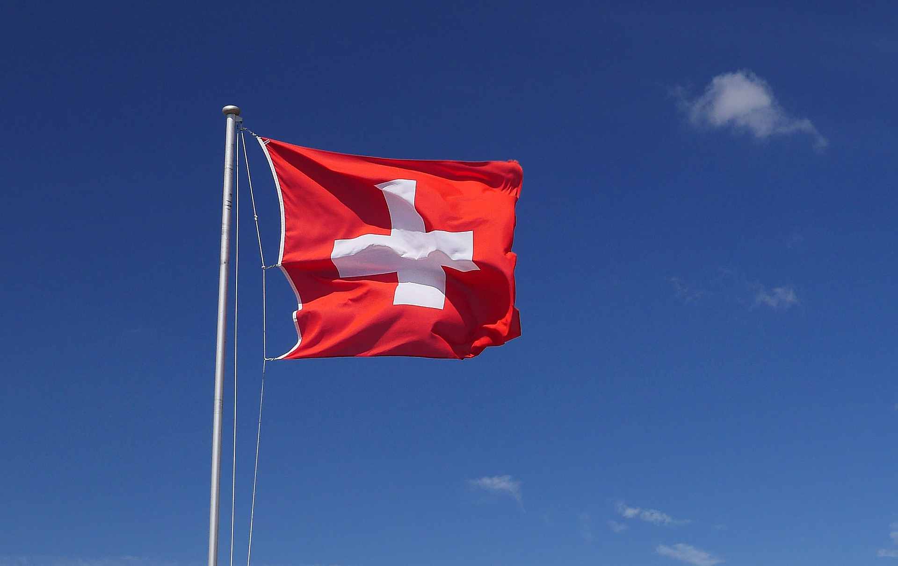

스위스
👉🏻수도
헌법상의 수도는 따로 없지만 연방의회와 국제기구가 많이 위치한 베른이 사실상 수도의 역할을 하고 있다.
👉🏻언어
독일어, 프랑스어, 이탈리아어, 로망슈어 순으로 많이 쓰인다.
👉🏻기후
스위스의 기후는 전반적으로 온화하지만 산지가 많아 지형에 따른 기후 변화가 심하고 지역 간 기후도 다양하다.
👉🏻화폐 및 물가
유로를 안 쓰는 유럽 국가 중 하나이다. 스위스 프랑이라는 독자 화폐를 쓴다.
물가는 비싼 편으로 원재료는 한국과 비슷하나, 인건비가 들어가는 식당, 택시 등은 물가가 매우 높다.